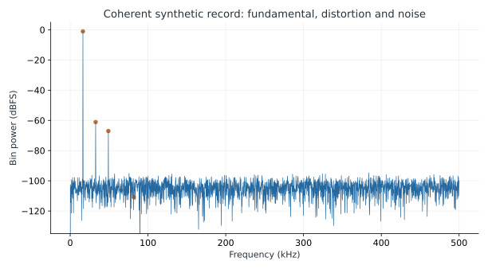
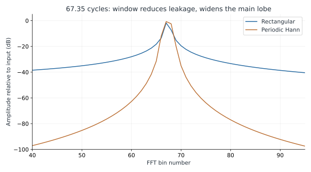
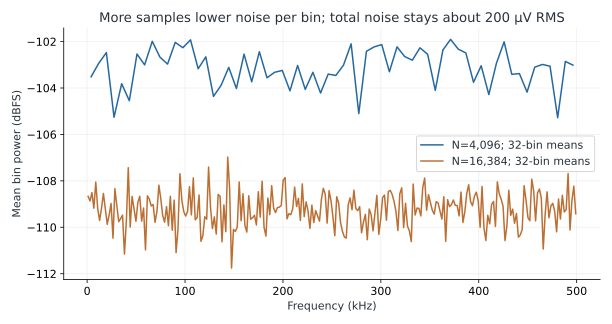

FFT, Noise & Distortion Measurements
Make a spectrum a reproducible engineering measurement.
- Define SNR, SINAD, THD, SFDR, and dBFS without confusing their denominators.
- Choose coherent captures or a justified window, and normalize the FFT correctly.
- Separate noise density, noise per bin, and total noise over a band.
- Diagnose whether a measured spur comes from the circuit, stimulus, clock, data path, or analysis.
1. An FFT is a measurement procedure
An FFT (fast Fourier transform) is an efficient algorithm for computing the discrete Fourier transform (DFT). It turns a record of N equally spaced samples into N frequency bins spaced fs/N apart, each holding the amplitude and phase of the signal at that frequency. The arithmetic is exact; what the algorithm cannot judge is whether the record was captured in a way that makes the bins meaningful. Lesson 9 introduces sampling, bins, leakage and windows from the beginning, with an interactive example.
A spectrum can reveal harmonics, clock feedthrough, reference ripple, noise, and digital-pattern interference that a time-domain plot hides. It can also create misleading results through a noncoherent record, a wrong scale factor, unequal sampling intervals, missing data, or a transient captured before settling. The algorithm does not know which of those mechanisms is present.
For a mixed-signal ASIC, the analog and digital teams share the measurement chain. Analog design owns signal conditioning, sampling, reference quality, and device noise. Digital design owns sample timing, valid flags, word format, decimation, and capture integrity. Physical implementation determines supply coupling, return paths, and clock contamination. Preserve that chain in the test record before reporting a single number called “resolution.”
2. Build a record whose meaning is known
The included numerical example uses N=4096 uniformly spaced samples at fs=1 MHz. The sine completes k=67 cycles, so fin=kfs/N=16,357.421875 Hz and bin spacing Δf=fs/N=244.140625 Hz. Choosing an integer cycle count makes the ideal tone coherent with the record. With power-of-two N, an odd k is relatively prime to N and visits all sample phases before repeating; k does not need to be prime.
The synthetic input is centered at 0.9 V, with a 0.8 V peak fundamental, 0.8 mV peak second harmonic, 0.4 mV peak third harmonic, and 200 µV RMS independent Gaussian noise. An ideal 14-bit quantizer covers 0–1.8 V. A fixed random seed makes the record reproducible. This is a deliberately constructed dataset, not a transistor simulation or measured SKY130 ADC. Its known ingredients allow the analysis to be checked.
| Record item | Value or rule |
|---|---|
| Samples / sample rate | 4096 / 1,000,000 samples/s |
| Fundamental / harmonics | Bin 67; harmonic bins 134, 201, 268, 335 for orders 2–5 |
| DC handling | Subtract the record mean before FFT |
| Window for reported metrics | Rectangular; coherent record |
| Full-scale convention | A 0.9 V-peak full-scale sine has mean-square value 0.405 V² |
| Quantizer reconstruction | (code+0.5)×(1.8/16384) V; saturating unsigned codes |
| Noise seed | 20261106 |
| Reported integration band | Non-DC bins through Nyquist, with the explicitly listed signal/harmonic exclusions |
Before using real converter data, check its encoding. Offset binary, two's complement, sign extension, and lane order are different. Convert codes consistently, inspect minimum and maximum values, and verify that every retained sample belongs to a valid conversion. A gap in the capture is not repaired by assigning the next sample an earlier timestamp. Burst samples and decimated samples also need the correct effective sampling rate.
3. Normalize power before taking logarithms
NumPy's default forward FFT is unnormalized. For an even-length real record x, form X=rfft(x) and start with P[k]=|X[k]|²/N². Double the positive-frequency bins that have negative-frequency partners, excluding DC and Nyquist. The sum of these one-sided bin powers equals the time-domain mean-square value. Here “power” means squared voltage; a common resistance would cancel in the ratios.
x = volts - volts.mean()
X = np.fft.rfft(x)
P = np.abs(X)**2 / len(x)**2
P[1:-1] *= 2 # even N: do not double DC or Nyquist
assert np.isclose(P.sum(), np.mean(x*x))For a coherent sine of peak amplitude A away from DC and Nyquist, the fundamental bin contains A²/2. This simple independent check catches many scaling errors. Use 10 log10 for ratios of these mean-square powers; use 20 log10 for amplitude ratios. Summing values after conversion to dB is not power integration. Sum linear powers first.

4. Different metrics answer different questions
| Metric | Definition used here | Meaning |
|---|---|---|
| SNR | 10 log10(Pfund/Pnoise); exclude DC, fundamental, and harmonics 2–5 from noise | Broadband/random residual relative to the signal under the stated masks |
| SINAD | 10 log10(Pfund/(Pnoise+Pharmonics)) | Noise plus distortion relative to the signal |
| THD | 10 log10(ΣPharmonics/Pfund), orders 2–5 | Total selected harmonic power; normally a negative dBc number |
| SFDR | 10 log10(Pfund/Plargest_other_bin), excluding DC | Largest remaining coherent spur, including harmonics, below the signal |
| dBFS | 10 log10(P/Pfull_scale_sine) | Power relative to the specified full-scale sine convention |
| SINAD-equivalent bits | (SINAD−1.76)/6.02 at this tested amplitude | A convenient ideal-quantizer comparison, not the ADC word length |
| Executed calculation | Result |
|---|---|
| SNR | 68.910 dB |
| SINAD | 58.656 dB |
| THD, orders 2–5 | -59.086 dBc |
| SFDR | 60.067 dBc |
| Estimated noise after masks | 202.793 µV RMS |
| SINAD-equivalent bits at −1.023 dBFS | 9.451 bits |
SINAD is lower than SNR because distortion dominates this constructed record. The data word has 14 bits, but that does not make it a 14-bit-accurate converter. The familiar 6.02N+1.76 dB ideal-quantization relation assumes a full-scale sine and its usual quantization assumptions. Here the input is below full scale, so the reported 9.451 bits is explicitly the unadjusted SINAD-equivalent value at that amplitude. It does not predict distortion at a larger input.
The excluded harmonic bins contain some random noise too. The reported SNR estimate omits that small contribution; it is not a perfect decomposition of each physical source. A stricter measurement method can estimate noise under the removed bins, document a different harmonic count, or use a fitted sine. State that choice. The simple largest-bin SFDR rule is appropriate for this coherent record; a windowed or spread spur may require integration across several bins.
Harmonics above Nyquist fold. At fs=1 MHz, a 300 kHz input has a third harmonic at 900 kHz, which aliases to 100 kHz. Compute locations after folding, and avoid captures where important harmonics land on DC, the fundamental, or each other if they must be separated. The runner implements a folded-bin calculation rather than assuming all harmonics remain in the first Nyquist zone.
5. If the record is not coherent, choose a window deliberately
A sine completing 67.35 cycles does not join smoothly at the record boundary. A rectangular window spreads its energy into many bins. That leakage can be miscounted as noise or distortion. A Hann window reduces distant sidelobes but broadens the main lobe. It does not restore the missing coherent record or guarantee the same metric masks are valid.

For window values w[n], coherent gain is CG=Σw/N. A bin-centered tone's peak amplitude can be recovered with 2|FFT(xw)|/(N·CG), away from DC and Nyquist. Equivalent noise bandwidth in bins is ENBW=NΣw²/(Σw)². The periodic Hann used here has CG=0.5 and ENBW=1.5 bins, or 366.21094 Hz for this record. A symmetric Hann generated with N−1 in the cosine has slightly different finite-length values; use the actual window.
For noise density, use |FFT(xw)|²/(fs·Σw²) with the same one-sided doubling rule. Its units are V²/Hz. Integrating density over frequency gives a noise mean-square estimate. Tone-amplitude correction and noise-density correction use different normalizations. Applying a coherent-gain correction and then treating every bin as a rectangular-bin noise measurement overstates or understates noise unless ENBW is handled consistently.
In a practical noncoherent measurement, define the signal main-lobe mask, harmonic masks, analysis band, and noise treatment around removed bins. Change the window only with those definitions in view. Zero-padding draws more frequency samples of the same finite record; it does not add observation time or resolve two tones that the original window cannot separate.
6. A lower noise floor per bin may mean the same noise

At fixed fs, four times as many samples reduces bin width by four. White-noise power per bin falls by about 6.02 dB, while the total integrated over 0–fs/2 stays approximately constant. In these seeded records, RMS values are 202.40 and 200.22 µV, with ordinary finite-record variation. Comparing plotted floors without record length, window, and bandwidth is misleading.
Averaging multiple power spectra reduces estimator variance. It does not remove the underlying physical noise power. Averaging time-domain samples can reduce bandwidth and change the signal-processing system itself. Label which operation is used. Likewise, removing low-frequency bins improves a reported wideband number only by changing the measurement band; it does not make low-frequency drift disappear.
7. Use circuit simulations and silicon captures correctly
SPICE transient output often uses adaptive timesteps. Feeding its irregularly spaced values directly into a uniform-sample FFT assigns the wrong timebase. Use supported uniform strobes, or resample with documented interpolation and adequate original timestep control. Verify that the spectrum is stable when timestep limits and resampling density are refined. Interpolation cannot recover a fast edge or tone that the original data did not resolve.
Allow startup and settling before collecting a steady-state record. A changing bias, reference, or output common mode can create broad spectral energy. Ordinary deterministic transistor transient analysis does not include random device noise unless the simulator and model enable a suitable noise method. An FFT of a perfectly smooth deterministic waveform can estimate distortion, but cannot establish a physical noise floor by itself.
On hardware, the source, filter, driver, clock, and reference all contribute. A source harmonic may be larger than the converter distortion. Jitter converts input slope into sampled error and becomes more demanding as input frequency increases. Correlated digital interference may produce narrow spurs rather than a uniform noise floor. Change one condition at a time: input frequency, amplitude, sample rate, digital activity, or reference loading. A spur's movement is often more informative than its original amplitude.
| Observation | Useful next check |
|---|---|
| Spur follows a harmonic of fin | Source purity, driver distortion, converter nonlinearity |
| Spur follows a clock or activity pattern | Clock/reference coupling, supply return, digital capture pattern |
| Floor changes with FFT length | Bin width, window normalization, integrated noise |
| Result changes with timestep | Numerical resolution, interpolation, edge capture |
| Spectrum broadens after startup | Bias/reference settling and record stationarity |
| Unexpected large DC or alternating pattern | Code encoding, lane order, sign extension, missing samples |
- Reproduce all calculations and figures
- Synthetic sample record
- Linear bin powers
- Metrics, assumptions, and independent numerical checks
Read the shared setup guide before running. Recorded results are included so you can study the lab without installing tools.
python labs/analysis_examples/run.pyThe runner checks Parseval normalization, a pure coherent sine, periodic-Hann gain/bandwidth, and agreement with SciPy’s independently implemented periodogram scaling. These checks validate the analysis arithmetic for the stated example; they do not characterize an ASIC.
Checkpoint: a 16,384-point FFT has a 6 dB lower white-noise floor than a 4096-point FFT. Did the circuit improve?
Not necessarily. At the same sample rate it has one quarter of the bin width. Integrate linear noise power over the same frequency band with consistent window normalization before comparing the circuit.
Checkpoint: can the coherent-record script be used unchanged on a noncoherent Hann-windowed capture?
No. The normalization and tone/harmonic masks must account for window gain, ENBW, and main-lobe spreading. A single-bin signal mask would count part of the desired tone as noise.
Key takeaways
- Record amplitude, rate, length, band, window, and masks with every metric.
- Normalize linear power and verify it independently before converting to dB.
- Separate noise density, bin power, and integrated noise.
- Preserve the analog stimulus, clock, digital capture, and numerical-analysis chain.
Sources & scope
Checked 6 November 2026. Diagrams and worked examples are original. Assumed values describe teaching models; recorded simulations retain their decks, data, and tool versions.
- Analog Devices MT-003 — converter spectral metrics and ideal-quantization context.
- Analog Devices: Coherent versus window sampling — capture coherence and window tradeoffs.
- NumPy 2.3 FFT documentation — transform normalization and real-FFT conventions.
- SciPy 1.17 periodogram documentation — density versus spectrum scaling; independent arithmetic cross-check.
- Analog Devices AN-835 — measurement-chain effects including source filtering and clocks.
- ngspice version 44 manual — transient data, numerical controls, and noise-analysis distinctions.
All 84 lessons
- Part I · Foundations: the physical chip and its vocabulary
- 1. What Is a Chip? Board, Package & Die
- 2. The Silicon Wafer: From Crystal to Dies
- 3. How a Die Is Built: SKY130 Layers & Lithography
- 4. The MOSFET: SKY130’s Transistor
- 5. Anatomy of a Die: Core, Pad Ring & Seal Ring
- 6. Packages: Wire Bonds, Flip-Chip, QFN & WLCSP
- 7. The PCB and the Path to the Transistor
- 8. The Design Flow and Its Files: RTL to GDS
- 9. Signals Primer: DC, AC, RMS, Decibels & the FFT
- Part II · Transistors to logic gates
- 10. Logic Gates at the Transistor Level
- 11. Drive Strength & Transistor Sizing
- 12. More Gate Topologies
- Part III · Standard-cell layout
- 13. Site Rows & Standard Cell Placement
- 14. The Power Grid & Routing Grids
- 15. Metal Layers, Vias & the Stackup
- 16. Inside a Standard Cell's Layout
- 17. The Cell Template: Tracks, Sites & Edges
- 18. Anatomy of a Bigger Cell
- 19. Pin Access & Porosity
- 20. A Flip-Flop From the Inside
- Part IV · Loads, timing and interconnect
- 21. Loads
- 22. Liberty Files: What a Cell Library Records
- 23. Reading Liberty Timing Tables
- 24. Standard-Cell Characterization: How Liberty Is Made
- 25. Timing
- 26. Setup and Hold
- 27. Latch-Based Design & Time Borrowing
- 28. Routing Resistance and Parasitics
- 29. Delay from Physics: Transistor, Contact, Via, Wire & Gate
- 30. Electromigration
- 31. Reliability & Aging: HCI, BTI, TDDB & Self-Heating
- 32. DFM, Variation & Yield: A Digital View
- Part V · Digital implementation
- 33. RTL Patterns: FSMs, Handshakes, Resets & Lint
- 34. RTL, Synthesis & Timing Constraints
- 35. The Clock Tree
- 36. Clock Generation: Oscillators, DCO, PLL & Jitter
- 37. Clock Gating & Power States
- 38. Power Analysis & Low-Power Cells
- 39. Clock-Domain Crossings & Reset
- 40. Scan
- 41. DFT Beyond Scan: Faults, ATPG, BIST and JTAG
- 42. A Timed Logic Path: Registers, Clocks, Scan & Speed/Power
- 43. Memories: SRAM, OpenRAM and DFFRAM
- 44. Datapath & Arithmetic
- 45. Multi-Corner STA: OCV, CRPR & Hold Cells
- 46. Functional Verification: Testbenches, Assertions, Formal & Gate-Level Sim
- Part VI · Physical cells and the floorplan
- 47. Fill Cells
- 48. Well Taps and Latch-up
- 49. Endcaps
- 50. Tie Cells
- 51. Antenna Diodes
- 52. Decap Cells
- 53. Spare Cells and ECO
- 54. Level Shifters
- 55. Floorplan
- 56. Caravel Integration: The User Project Wrapper
- 57. Hierarchical Design, Abstracts & ECO
- 58. Placement: Global, Legalization & Detailed
- 59. Routing & Timing Closure
- 60. Digital Signal Integrity: Crosstalk Delay & Glitch
- 61. Metal Fill and Cell Fill
- 62. Physical Verification Signoff
- 63. Power-Integrity Signoff: Static IR, Dynamic IR & EM
- Part VII · The chip boundary: I/O, ESD and package
- 64. The I/O Ring
- 65. ESD and Clamps
- 66. I/O Fill
- 67. RDL Routing
- 68. I/O Power and IR Drop
- 69. Power, Package & Thermal Coupling
- 70. Tapeout, MPW & Tiny Tapeout
- 71. Post-Silicon Bring-Up, Test & Characterization
- Part VIII · Analog circuits
- 72. Analog Bias, gm & Headroom
- 73. Feedback, Loading & Stability
- 74. Differential Pairs, Common Mode & CMFB
- 75. Noise, Mismatch & Variation
- 76. References, Temperature & Startup
- 77. Comparators & Power Management: StrongARM, LDO & POR
- 78. Matching, Layout & Extracted Netlists
- Part IX · Mixed-signal: sampling, conversion and verification
- 79. Sampling, Aliasing & Settling
- 80. ADC & DAC Interfaces
- 81. FFT, Noise & Distortion Measurements
- 82. Calibration, Trimming & Testability
- 83. Crosstalk, Return Paths & Isolation
- 84. Mixed-Signal Verification & Bring-Up
Updated 11 November 2026 · 84 lessons · Offline lessons, diagrams, source code and recorded results · External references require internet access.